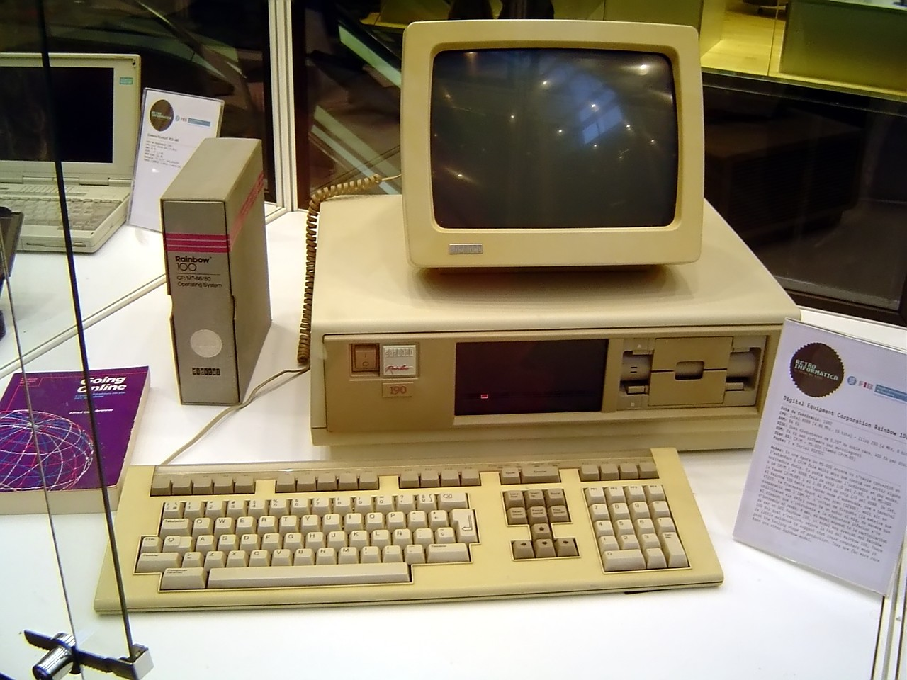

Fakte Interesante |
|||
| Home | Rreth nesh | Kontakt | Regjistrohu |
|  |
Sot do shohim disa fakte interesante lidhur me kompjuteret : 1. Kompjuteri i parë peshonte më shumë se 27 tonë Emri i saj ishte ENIAC dhe zuri një hapësirë modeste prej 1800 metrash katrorë. 2. Rreth 90% e monedhës botërore ekziston vetëm në kompjuter Kjo do të thotë se vetëm rreth 10% e monedhës globale është në të vërtetë para në dorë. 3. Miu i parë kompjuterik ishte bërë prej druri Doug Engelbart e shpiku atë në 1964. 4. Rreth 70% e inxhinierëve të viruseve punojnë për sindikatat e krimit të organizuar Kjo i jep peshë të re rëndësisë së softuerit anti-virus dhe anti-malware, dhe shërbimeve të shkëlqyera për heqjen e viruseve. 5. Programuesi i parë i njohur kompjuterik ishte një grua Ajo quhej Ada Lovelace dhe jetonte në Angli, ku punonte si matematikane dhe shkrimtare. Ajo është e famshme për punën në "Motorin Analitik". 6. Disa nga markat më të mëdha të kompjuterëve të filluara në garazhe Kjo është e vërtetë për Apple, Microsoft dhe HP. 7. Njerëzit pulsin më pak kur përdorin kompjuterë Ndërsa një person mesatarisht pulson rreth 20 herë në minutë në rrethana normale, njerëzit në kompjuter pulsojnë vetëm rreth shtatë herë në minutë. 8. Hakerët shkruajnë rreth 6000 viruse të reja çdo muaj Këta viruse janë krijuar për të synuar një përzgjedhje të gjerë të sistemeve operative, kështu që të mësosh për të shmangur viruset dhe malware është thelbësor! 9. Më shumë se 80% e emaileve ditore në SHBA janë Spam Për t'i mbajtur të dhënat tuaja të sigurta, fshijini menjëherë këto email dhe mos klikoni lidhjet ose bashkëngjitjet që mund të përmbajnë. 10. MyDoom është virusi kompjuterik më i shtrenjtë në histori Virusi kushtoi rreth 38.5 miliardë dollarë dëm dhe u shfaq në janar të 2006. Menjëherë pas kësaj, ai fitoi një emër për veten si virusi më i përhapur ndonjëherë. |
||
Copyright © 2023, Designed by LedioDownload Source Code |
|||